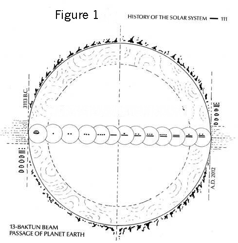
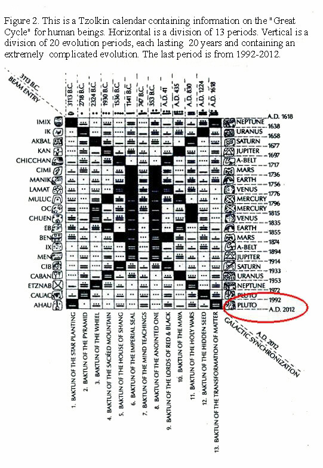

07/06/05 — Từ Minhhue.net
Trong nền văn minh lịch sử cổ đại, nền văn minh Maya xuất hiện giống như rớt từ trên trời, trải qua thời kỳ choí lọi, rực rỡ, sau đó biến mất một cách thần bí. Người Maya hiểu biết thâm thúy về thiên văn học, một hệ thống hoàn hảo về lịch pháp, toán học phức tạp và ý niệm trừu tượng. Độ chính xác và hoàn hảo của lịch pháp khiến chúng ta kinh ngạc.
Lời tiên đoán của Maya dựa vào cơ bản lịch pháp của họ, giống như người cổ Trung Quốc dùng Chu Dịch (người Trung Quốc tiền sử dùng biểu đồ để tính đoán ra diễn biến của thiên nhiên). Chủ yếu là nghiên cứu sự đối ứng giữa quy luật vận hành của thiên thể và sự thay đổi trong xã hôị nhân loại. Một lịch sử học gia ở Mỹ, Bác Sĩ Jose Arguelles dùng cả đời ông đi nghiên cưú nền văn minh của Maya. Trong sách “Nhân Tố Maya” ông đã xuất bản, đã chi tiết tường thuật lịch pháp của Maya. Căn cứ lịch Maya gọi là “Cholqij” đã có ghi chép rằng, hệ mặt trời đang đi suốt một đại chu kỳ hơi 5100 năm, từ 3113 B.C. cho đến 2012 A.C. Trong chu kỳ này, sự di động của hệ mặt trời và điạ cầu đang thông qua một chùm ánh sáng đến từ tâm hạch hệ Ngân hà. Đường kinh cắt chéo của Tia sáng này là 5125 cái điạ cầu niên (năm trái đất), tức là địa cầu dùng 5125 năm mới hoàn toàn thông qua tia sáng này.
|  |
|  |
Người Maya tin rằng, sau khi hệ mặt trời và các tinh cầu đã hoàn toàn trải qua đại chu kỳ dưới ảnh hưởng của tia sáng này sẽ có một biến hoá rất to lớn và đồng bộ với hệ ngân hà. Đại chu kỳ này tổng cộng phân ra 13 giai đoạn. Diễn hoá của mỗi giai đoạn này đều biên bản rất tỉ mỉ.
Tiến sĩ Jose Arguelles dùng nhiều góc độc suy xét và những phương pháp phức tạp để tham thảo và giải thích ẩn ý thiên tượng muốn gơị ý cho nhân loại. Trong sách sách “Nhân Tố Maya” ông dùng nhiều đồ biểu để giải rõ tình trạng diễn hoá của mỗi giai đoạn. Còn phân mỗi giai đoạn thành 20 thời kỳ diễn hoá. Mỗi thời kỳ là 20 năm.
Dưạ vào lịch pháp Maya, năm 1992 là giai đoạn cuối cùng (giai đoạn 13) trong đại chu kỳ, nhưng là năm đầu của 20 năm trong thời kỳ diễn hoá cuối cùng này. Trong thời gian 20 năm này gọi là tinh chế (tịnh hoá) điạ cầu. Trong thời kỳ này, điạ cầu sẽ hoàn toàn được tinh chế, cũng như nhân tâm cũng sẽ được lọc trong (tương tự với lời tiên đoán hiện nay của người Ân Độ nơi Bắc Mỹ). Những thứ hư xấu sẽ bị diệt trừ, những thứ tốt sẽ giữ lại. Sau khi tinh chế, điạ cầu sẽ đi ra ngoài phạm vi tia sáng của hệ ngân hà và bắt đầu giai đoạn “đồng bộ với hệ ngân hà”. Theo lịch pháp của Maya, ngày 31 tháng 12 năm 2012 nền văn minh nhân loại của thời kỳ này sẽ kết thúc. Sau đó, nhân loại sẽ bắt đầu một nền văn minh mới hoàn toàn không có dính líu đến nền văn minh trước đó. Trong ngày đông chí, khi nơi điểm chéo của mặt trời, đường hoàng đạo và xích đạo sẽ liên kết với nhau. Lúc đó, mặt trời vưà hạ xuống nơi kẽ hở của hệ ngân hà, tạo thành một cảnh tượng như mở “cửa trời” cho điạ cầu.(lời tiên đoán “Thơ Hoa Mai” ở triều đại Tống: Thiên Môn Vạn Cổ Khai)
Năm 755 B.C., một thầy tăng của Maya dự đoán: sau 1991, nhân loại sẽ có hai sự việc quan trọng xảy ra:
Tỉnh giác của nhân loại về ý thức vũ trụ
Địa cầu tịnh hóa và tái sanh
Lịch pháp ẩn bí của Maya đã bày tỏ quy luật vận động của hệ ngân hà. Nó giống như bốn muà trong năm vậy, không thể thay đổi.
Lọc sạch là diệt trừ sự vật bại hoại, mà giữ lại những sự vật tốt lành. Hiện giờ, hoàn cảnh thiên nhiên đã ô nhiễm, hư hại và đã đến mức độ nguy hiểm. Đạo đức nhân loại trượt xuống nhanh chóng, méo mó linh hồn, tinh thần ô nhiễm đến kinh sợ. Mọi người đều thúc đẩy sự thoái hoá này. Mọi người đã tê liệt đối với những hiện tượng bất lương này.
Làm sao có thể tinh chế cái xã hôị này? Tin cậy Pháp Luật, nương tựa vào khoa học hay là tin cậy vào tôn giáo chăng?
Pháp Luật có thể ngăn giữ hành vi con người, nhưng nó không kiềm chế được nôị tâm con người. Con người chế tạo Luật pháp, kẻ phạm pháp có thể dùng điạ vị, quan hệ và tiền tài tránh thoát sự trừng phạt. Pháp luật chỉ có thể trị bề ngoài không trị từ gốc.
Chính khoa học khuyến khích con người hưởng thụ vật chất, mà thoát rời căn bản đạo đức. Thực tế là con người tự phá hủy thiên nhiên chỉ vì hưởng thụ vật chất. Khi con người nhận thức sự quan trọng của thiên nhiên, lại dùng khoa học cứu chữa, nhưng càng gây nhiều khó khăn, như là đập bể tường phía đông để bù đắp tường phía tây.
Ba ngàn năm nhân loại đều có tôn giáo tín ngưỡng, nhưng cũng không thể ngăn ngừa đạo đức nhân loại trượt xuống. Làm sao có thể trông mong tôn giáo nâng cao đạo đức nhân loại? Hiện nay, trong tôn giáo ngay cả người tu luyện cũng là chính khách.
Chỉ có tỉnh giác của con người mới có thể mang đạo đức nhân loại trở lại. Tâm linh con người được tinh chế, những hiện tượng bất lương trong xã hôị mới có thể bị tiêu diệt từ gốc lên. Năm 1992, Thầy Lý, Hồng Chí bắt đầu truyền Pháp Luân Đại Pháp, chỉ vài năm, đã khiến cả triệu người, tâm linh được tịnh hóa, đạo đức được nâng cao.
Từ tháng 7 năm 1999, Giang Trạch Dân vì ghen tị mà bắt đầu vô lý bức hại Pháp Luân Công. Y như lời đoán trước của một người Pháp tên là Nostradamus, trong quyển sách “Thế Kỷ” được viết 400 năm về trước. Từ đó Pháp Luân Công được đưa lên sân khấu thế giới, không chỉ là tu luyện của điạ phương. Lực lượng tịnh hoá và tái sinh địa cầu cần hướng về toàn thế giới, có uy lực truyền “Chân, Thiên, Nhẫn” và tiêu diệt tà ác. Ảnh hưởng toàn cầu và khiến mọi người đều biết Pháp Luân Công, cho họ cơ hội suy xét và tự phán đoán. Lịch pháp Maya không bị tiêu mất trong lịch sử và con người có thể thăm dò và hiểu biết được lịch pháp cũng là thiên ý. Sự tồn tại của lịch pháp Maya, cho nhân loại hiện giờ thêm một phần khải thị.
Chúng tôi muốn cho thế nhân biết: đừng quên làm người có nguyên tắc, đừng mù quáng bắt chước theo quan điểm người khác, nên đối sinh mệnh và tương lai của chính mình phải có trách nhiệm, thời ơ tà ác là chung dung nó. Bảo vệ thiện và chính nghĩa là diệt tà ác. Lưạ chọn thiện và ác là vấn đề mọi người cần phải đối diện. Học viên Pháp Luân Công tự nguyện đóng góp, bất chấp hiểm nguy tính mạng để bộc lộ gian trá của tà ác và giải chân tượng cho thế nhân biết, chỉ vì giúp đỡ thế nhân phân biệt thiện ác, quyết định đúng đắn, do đó có một tương lai tuyệt vời.
Giang lạm dụng quyền lực, phỉ báng, hãm hại và gây thù hận, phản đối Pháp Luân Công. Học viên chúng tôi nơi Trung Quốc dùng quyền lợi hiến pháp hoà bình giải chân tượng, và cứu độ những người bị tà ác lừa gạt. Chúng tôi có tội gì?
Chúng tôi hy vọng những người bị lời tuyên truyền của Giang lừa gạt, nhận thức được sự dối trá của tà ác và thay đổi quan điểm của họ mà đến tìm hiểu thêm chân lý của vũ trụ, chân thành ước mong mọi người đều có một tương lai tốt đẹp.